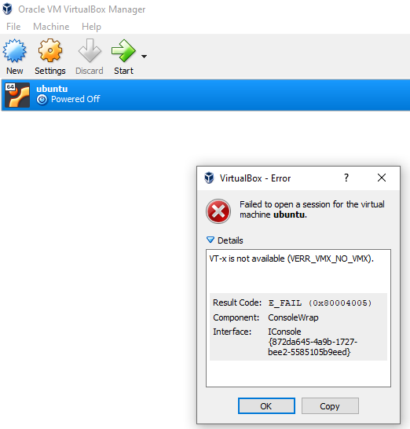
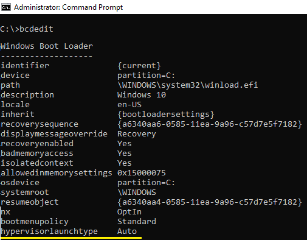
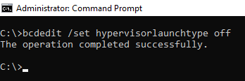
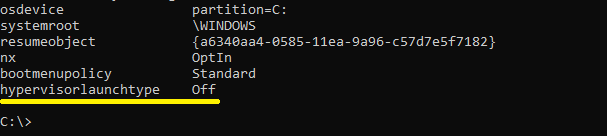
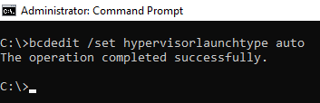

VM Virtual box manager error
Issue:
Upon setting and starting up a Ubuntu OS on Oracle VM Virtual Box, a error message pops up on Windows 10 Operating System. Hyper-V is enabled on Windows 10 but still Ubuntu OS will not get started.Error message from the pop up is displayed as, VT-x is not available (VERR_VMX_NO_VMX) . Below screenshot shows the message.

Check Windows Hyper-V feature is enabled and in which mode as shown in below screenshot, 
Resolution:
Commands mentioned in below link worked for me and I have executed bcdedit related command to make the Ubuntu OS up and running. Link for reference: https://stackoverflow.com/questions/30496116/how-to-disable-hyper-v-in-command-lineCommand executed: bcdedit /set hypervisorlaunchtype off

Run bcdedit from command prompt and check the output, hypervisorlaunchtype paramter should show as Off

Upon restarting Windows OS, I could see the Ubuntu VM up and running successfully.
To make the command active, run below command,
bcdedit /set hypervisorlaunchtype auto

Following a Microsoft link as given below, we could see that we have to disable the Hyper-V feature so that the VM can be started. https://support.microsoft.com/en-ca/help/3204980/virtualization-applications-do-not-work-together-with-hyper-v-device-g
Going through few other comments in internet, I could see that, there may be a case of error like, Raw-mode is unavailable courtesy of Hyper-V. (VERR_SUPDRV_NO_RAW_MODE_HYPER_V_ROOT). and above command should fix the error or disable Hyper-V feature.
Back to Home